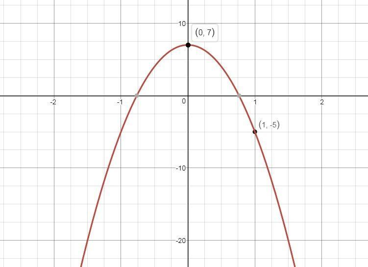
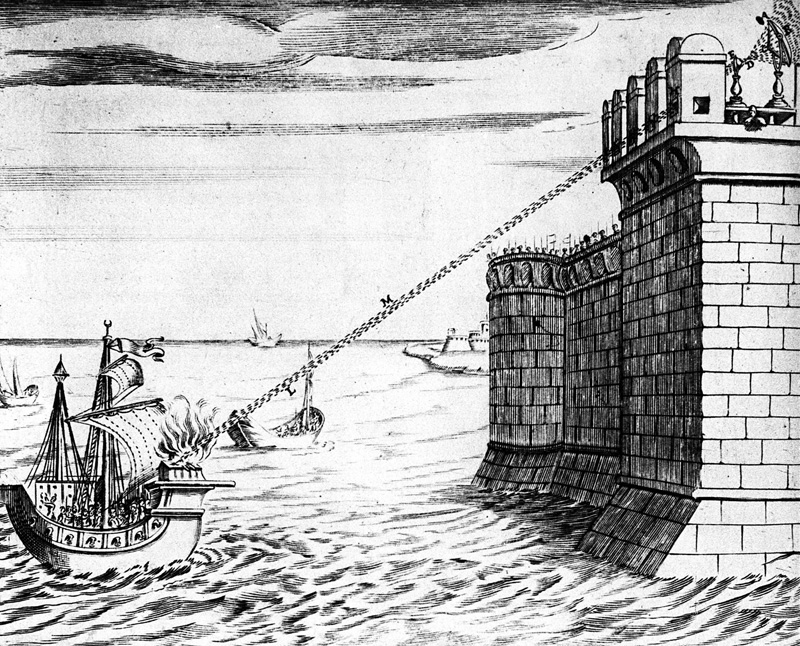
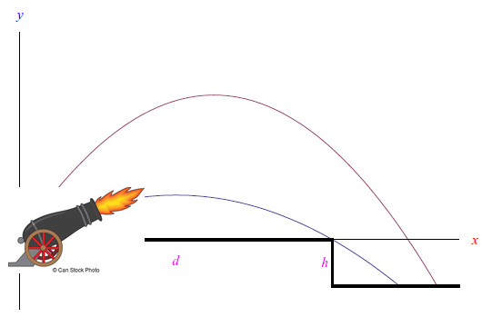
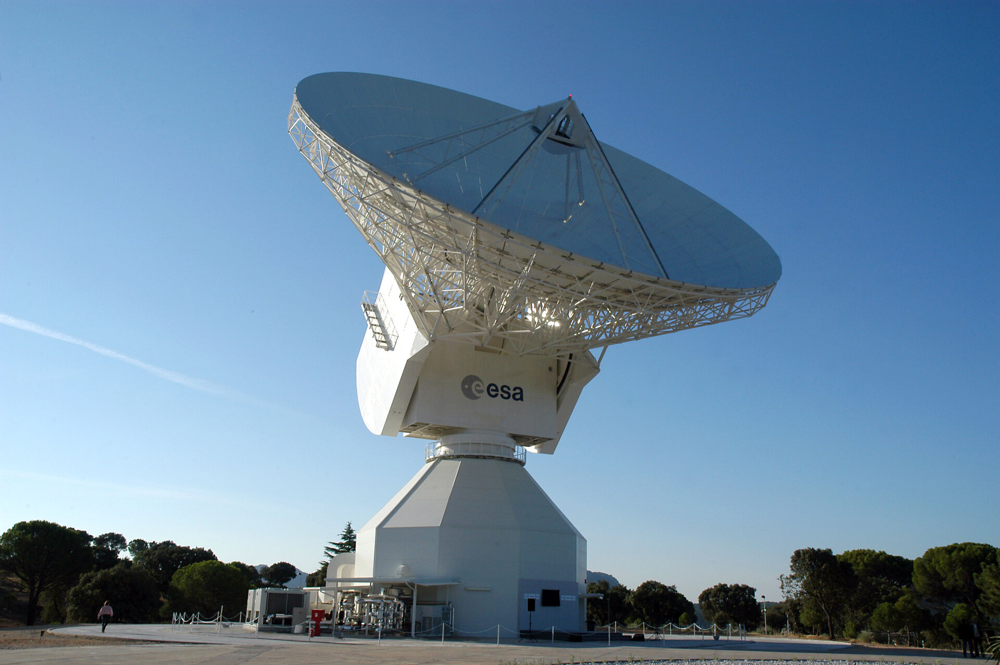

Come nasce la parabola: la parabola nasce da un problema pratico: quando i Greci consultarono l'oracolo di Delo per far terminare la peste questo disse che serviva erigere un altare con volume doppio di quello già presente ad Atene. Si pensò di raddoppiare il lato del cubo ma ciò avrebbe causato per il volume diventare 8 volte quello iniziale. Il problema si poteva risolvere solo con l'uso di un'equazione di secondo grado, proprio quella che dà origine alla parabola. La soluzione venne trovata da Menecmo.
Specchio ustorio di Archimede:
Fonti tarde suggeriscono come durante l'assedio romano di Siracusa (212 a.c.), la cittadina impiegò "specchi ustori" o parabolici, ideati dal matematico Archimede per incendiare le navi romane a distanza. Gli specchi prevedevano una struttura a parabola per sfruttarne la proprietà focale. Le testimonianze sono discordanti ed è probabile che tale tecnologia non sia mai davvero stata applicata, tuttavia la larga presenza degli specchi nelle testimonianze tarde rende certa la conoscenza delle proprietà della parabola.

L'artiglieria da fuoco:
Dall'introduzione delle armi da fuoco nelle guerre si sviluppò la necessità di capire la traiettoria dei colpi sparati, soprattutto per i cannoni che potevano dar fuoco anche a grandi distanze. Furono necessari gli studi di Galileo Galilei, sul solco di quelli di Tartaglia, per comprendere definitivamente il moto parabolico dei proiettili, il cui studio prese il nome di balistica. Da quel momento la balistica divenne uno degli studi fondamentali in ogni esercito, specie quello francese.

L'antenna parabolica (comunicazioni, scopi militari, astronomia):
Una delle maggiori applicazioni della parabola si trova nelle telecomunicazioni. L'italiano Guglielmo Marconi ebbe un ruolo chiave nello sviluppo della tecnologia, brevettando per primo l'antenna a riflettore parabolico in grado di sfruttarne la proprietà focale. Il maggiore avanzamento si ebbe durante la seconda guerra mondiale con il radar. Ad oggi tali antenne sono ancora uno dei capisaldi nella comunicazione televisiva, nel campo militare e nella ricerca scientifica astronomica.
